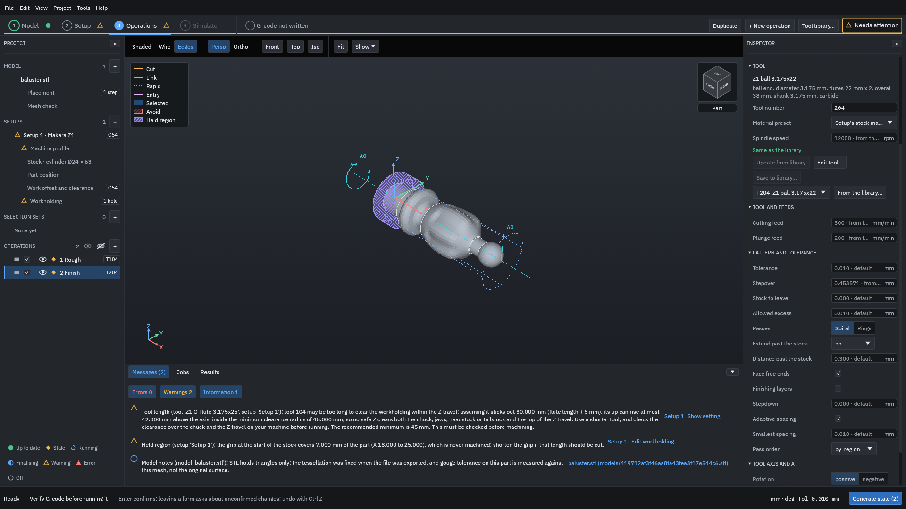
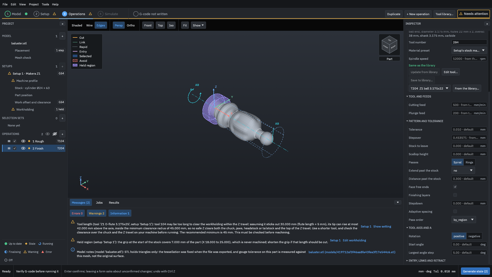

7. Add the operations
An operation is one machining job with one tool. You will add two: a roughing operation that removes most of the material quickly, and a finishing operation that cuts the final surface. Roughing and finishing explains why there are two.
Choose + New operation. The list of strategies shows what the program can do:

Each entry has a one-paragraph description. Face flow finishing is greyed because it needs a STEP model, and the list says so under it; Swarf, in the Specialist group further down, is greyed for the same reason.
Roughing
- Name the operation Rough and keep Rotary roughing as the strategy. The setup (Setup 1), the tool (Z1 O-flute 3.175x25) and the material preset (the setup’s Hardwood) are already right.
- Press Add.

- In the Inspector, set Stepdown to 1 mm. This field starts empty: the program does not guess how deep a layer should be.

Messages, under the view, now warns that this tool “may be too long to clear the workholding within the Z travel”: the program assumes it sticks out 30 mm (its flutes plus 5 mm), so on the Z1 its tip rises at most 42 mm above the axis, inside the 45 mm the chuck and its jaws need; on your machine, set the setup’s Minimum clearance to suit your stock and jaws, or use a tool that sticks out less. This tutorial keeps the tool, and you acknowledge the warning when you export (step 10).
The rest comes from the tool and the strategy. Two to look at:
- Stepover 2.2225 mm is 70 % of the tool’s diameter, from the tool’s cutting data.
- Stock to leave 0.300 mm: roughing stops 0.3 mm short of the part so that the finishing tool has a little to cut.
The cutting feed shown is the programmed feed. The machine profile’s own feed limits can slow moves that turn A; after a run, the Inspector says how many moves were slowed, and the export dialog in step 10 reports the effective feed. Stepover, stepdown, scallop and stock to leave says more about these settings.
Finishing
- Choose + New operation again.
- Choose Helical finishing, name it Finish and pick the tool Z1 ball 3.175x22.
- Press Add.

Helical finishing follows the surface in a spiral around the part as the tool moves along it. Its stock to leave is 0, so it cuts to the model. The strategy’s description warns that “the tool may not reach tight inside corners”: a ball of this size cannot cut a sharper corner than its own radius.
Turn off adaptive spacing
New finishing operations have Adaptive spacing ticked. The program then measures the material left between neighbouring passes and adds passes where more than the Allowed excess (0.01 mm by default) would be left. On this piece, with this tool, it cannot confirm the excess at some places before it reaches its limits, so it keeps the path made so far, marks it as partial, and asks you to accept that before it writes any G-code. A partial path is not wrong, but it is not complete, so this tutorial keeps it simple:
- Scroll down the Inspector to Adaptive spacing, near the end of Pattern and tolerance.
- Untick Adaptive spacing.

Adaptive spacing is worth trying on your own parts; read its warning, if it gives one, before you use the program. Passes can be Spiral (one continuous helix, the choice here) or Rings (separate rings, one after the other).